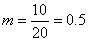
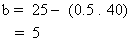

Intercept of a Line (Coordinate Geometry)
Definition: The intercept of a line is the y-value of the point where it crosses the y-axis.
Try this
Adjust the line below by dragging an orange dot at point A or B. The intercept is shown and recalculated as you drag.
You can also drag the origin point at (0,0).
The intercept of a line is the point at which it crosses either the x or y axis. If we do not specify which one, the y-axis is assumed.
It is usually designated by the letter b. Unless that line is exactly vertical, it will always cross the y-axis somewhere,
even if it is way off the top or bottom of the chart.
Formula for the intercept of a line
Below are two ways to find the intercept. Use either one depending on what you are given to start.
Given the slope of the line and any point on the line
The intercept (b) is given by
b=y-mx
where:
m is the slope of the line, found using methods described in
Slope of a Line (Coordinate Geometry).
<x and y are the coordinates of any point on the line.
Given two points on the line
First calculate the slope using the methods described in
Slope of a Line (Coordinate Geometry),
and then use the method above to find the intercept.
Example
Calculate the intercept given two points on the line.
- In the figure above press "reset".
- Using methods described in Slope of a Line (Coordinate Geometry)
find the slope of the line. In the figure above, you can click on "show slope" to see the slope calculation graphically.
In this case, it is

- Choose any point of the line, let's say B. The x and y coordinates of B are 40 and 25,
so we put those into the formula as x and y, together with 0.5 for m:

Which, as you can see matches the calculated value in the diagram.
It does not matter which point you use to substitute for x and y since they are always in the same ratio to each other - the slope of the line,
so it will always come out the same.
Things to try
-
In the above diagram, Drag the points A and B around and notice how the intercept changes.
Try it with A and B in different quadrants.
-
Click "hide details". Drag A and B to some new locations and calculate the intercept of the line yourself.
Then click "show details" and see how close you got.
Equation of a line
The intercept (b) of a line is one of the elements in the equation of a line when written in the "slope and intercept" form:
y = mx+b.
The b in the equation is the intercept of the line described here.
For more on this see:
In fact, the formula for the intercept given above is simply the line equation rearranged to solve for b.
Limitations
In the interest of clarity in the applet above, the coordinates are rounded off to integers and the lengths rounded to one decimal place.
This can cause calculatioons to be slightly off.
For more see
Teaching Notes
Other linear equation topics
Linear Function Explorer
(C) 2011 Copyright Math Open Reference.
All rights reserved